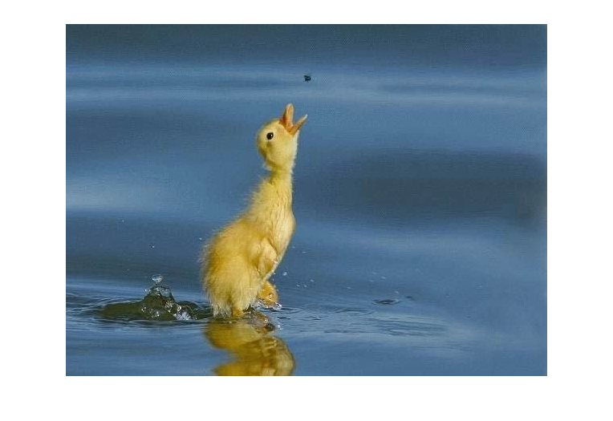
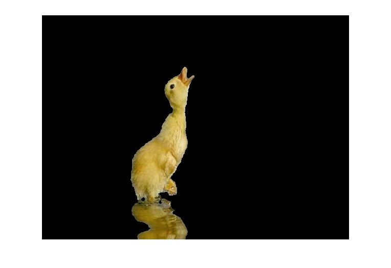
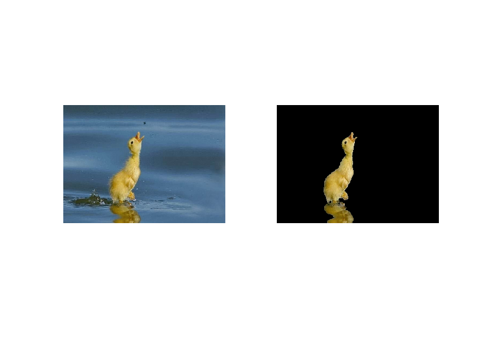

Contents
Matlab神经网络43个案例分析
A Little Clean Work
tic;
close all;
clear;
clc;
format compact;
读取图像数据
pic = imread('littleduck.jpg');
whos pic;
scrsz = get(0,'ScreenSize');
figure('Position',[scrsz(3)*1/4 scrsz(4)*1/6 scrsz(3)*4/5 scrsz(4)]*3/4);
imshow(pic);
Name Size Bytes Class Attributes
pic 439x600x3 790200 uint8

确定训练集
TrainData_background = zeros(20,3,'double');
TrainData_foreground = zeros(20,3,'double');
TrainData_background = ...
[52 74 87;
76 117 150;
19 48 62;
35 64 82;
46 58 36;
50 57 23;
110 127 135;
156 173 189;
246 242 232;
166 174 151];
TrainData_foreground = ...
[211 192 107;
202 193 164;
32 25 0;
213 201 151;
115 75 16;
101 70 0;
169 131 22;
150 133 87];
建立支持向量机
TrainLabel = [zeros(length(TrainData_background),1); ...
ones(length(TrainData_foreground),1)];
TrainData = [TrainData_background;TrainData_foreground];
model = svmtrain(TrainLabel, TrainData, '-t 1 -d 1');
进行预测i.e.进行图像分割
preTrainLabel = svmpredict(TrainLabel, TrainData, model);
[m,n,k] = size(pic)
TestData = double(reshape(pic,m*n,k));
whos TestData;
TestLabal = svmpredict(zeros(length(TestData),1), TestData, model);
Accuracy = 100% (18/18) (classification)
m =
439
n =
600
k =
3
Name Size Bytes Class Attributes
TestData 263400x3 6321600 double
Accuracy = 91.869% (241983/263400) (classification)
展示分割后的图像
ind = reshape([TestLabal,TestLabal,TestLabal],m,n,k);
ind = logical(ind);
pic_seg = pic;
pic_seg(~ind) = 0;
scrsz = get(0,'ScreenSize');
figure('Position',[scrsz(3)*1/4 scrsz(4)*1/6 scrsz(3)*4/5 scrsz(4)]*3/4);
imshow(pic_seg);
scrsz = get(0,'ScreenSize');
figure('Position',[scrsz(3)*1/4 scrsz(4)*1/6 scrsz(3)*4/5 scrsz(4)]*3/4);
subplot(1,2,1);
imshow(pic);
subplot(1,2,2);
imshow(pic_seg);
 
toc;
Elapsed time is 2.640061 seconds.